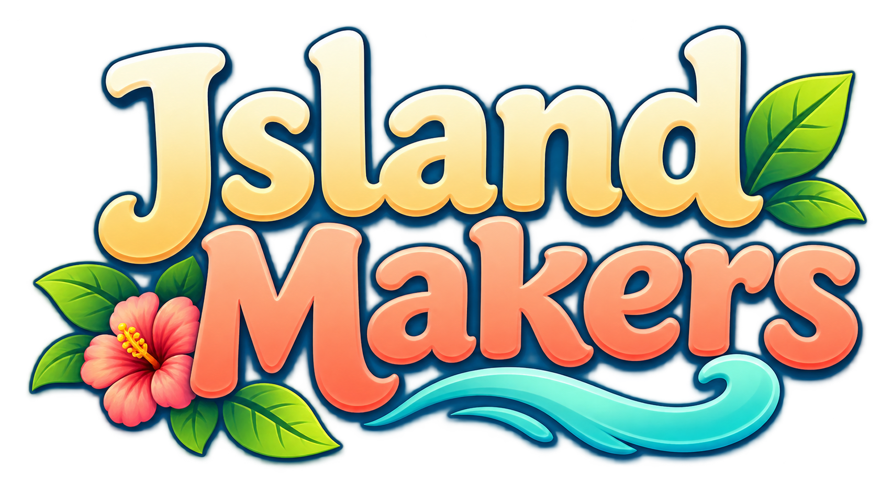
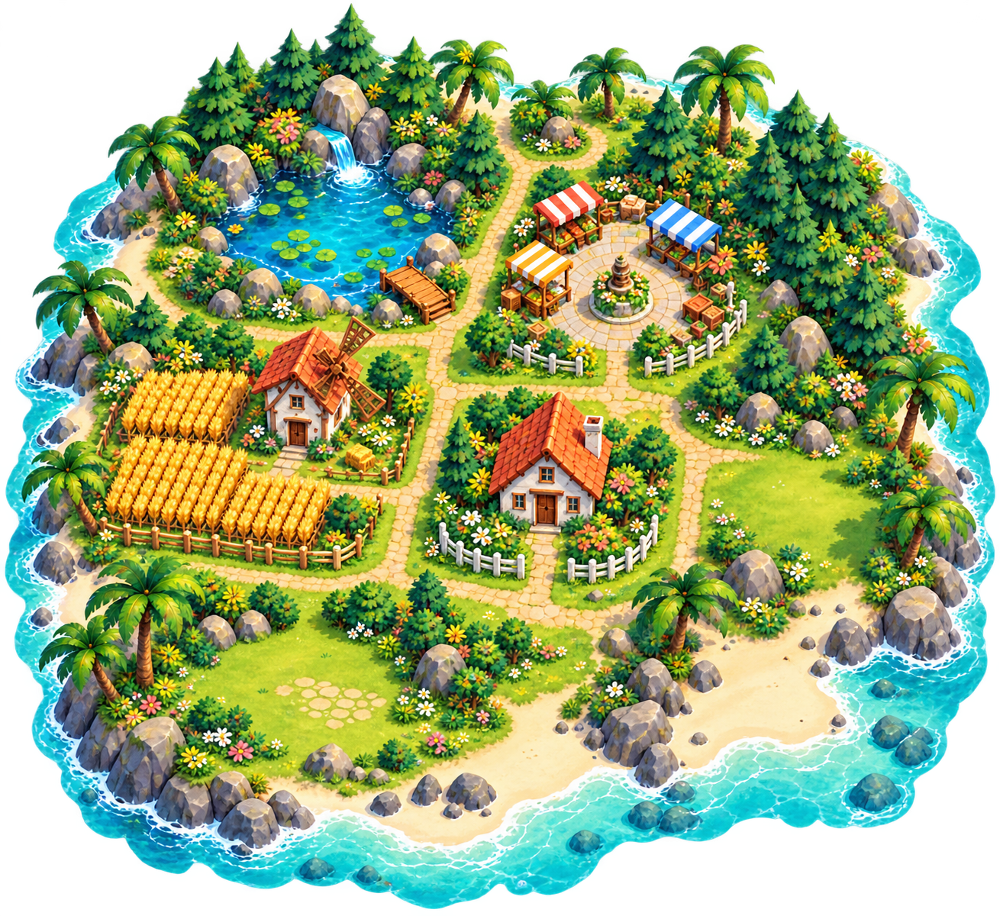

Your own little world.
16 tiles. Clever connections. An island that comes to life.
Island Makers is currently in private beta. The first public release is for players aged 16+. Store downloads will be added when public release is ready.

Account & data requests
In v0.13 and later: Explorer → Preferences → Delete my account. Confirm permanent deletion after a recent sign-in. For older beta versions or other privacy requests, use the contact below.
For access, correction or account deletion, contact evrenayan@gmail.com from the email linked to your game account. Mention Island Makers and the request you want us to handle. Never send your password, login code or identity document in an initial email.
We verify ownership before removing the account and its cloud progress, social connections, island designs and point records. Uninstalling or signing out does not delete cloud data. Provider security logs and any backups have their applicable retention periods; see the privacy policy.
Hesap ve veri talepleri için oyun hesabınıza bağlı e-posta adresinden bize yazabilirsiniz. Şifrenizi veya giriş kodunuzu göndermeyin.
Puedes solicitar acceso, rectificación o eliminación desde el correo de tu cuenta. No envíes contraseñas ni códigos de acceso.